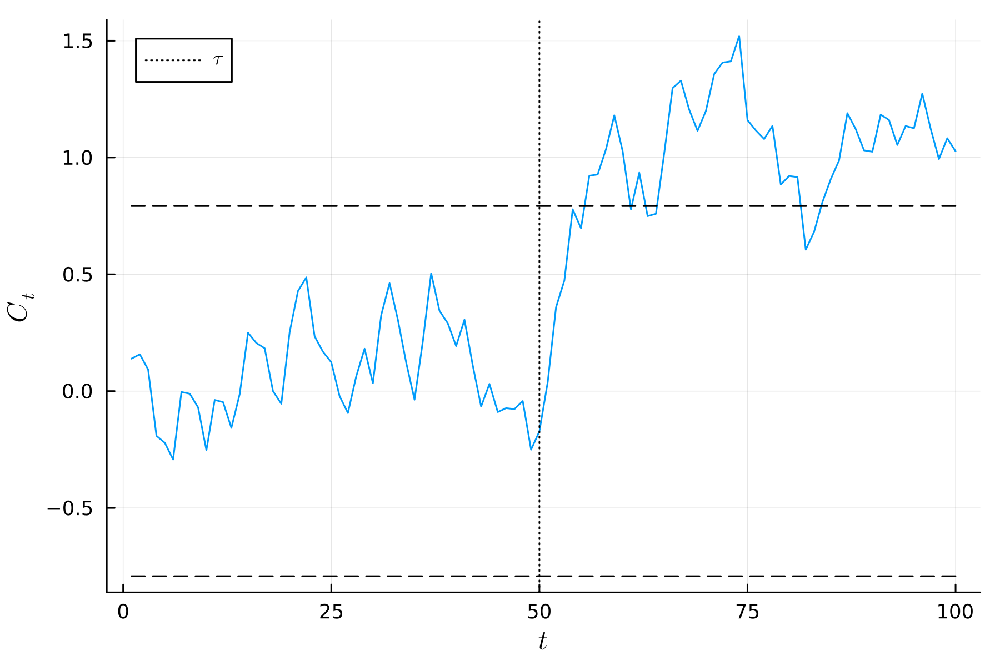

Residual-Based Monitoring of Autocorrelated Data
In this section, we demonstrate how the ResidualStatistic and AbstractPhase2 interfaces can be extended to accommodate custom data types. Specifically, we focus on monitoring the residuals of an autoregressive $\text{AR}(1)$ model, $ y_t = \phi y_{t-1} + \varepsilon_{t}, \quad \varepsilon_{t} \sim N(0,1), $ using an EWMA control chart.
First, the required packages are imported,
using StatisticalProcessMonitoring, Distributions, Random, NLopt, Plots, Parameters, LaTeXStringsWe then define a specialization of the ResidualStatistic type, which will be used to apply the control chart to the $\text{AR}(1)$ residuals.
julia> import StatisticalProcessMonitoring.residual!,
StatisticalProcessMonitoring.new_data!
julia> mutable struct AR1Statistic{S} <: ResidualStatistic
stat::S
phi::Float64
ym1::Float64
end
julia> function residual!(x, S::AR1Statistic)
yhat = x - S.phi * S.ym1
S.ym1 = x
return yhat
endTo sample observations from an $\text{AR}(1)$ process, we define a new type called Phase2AR1.
julia> @with_kw mutable struct Phase2AR1 <:
StatisticalProcessMonitoring.AbstractPhase2
phi::Float64
y::Float64 = 0.0
init::Bool = false
endThe initial observation $y_0$ required to sample $y_1$ is initialized using the stationary distribution $N(0, 1 / (1 + \phi^2 ))$.
julia> function new_data!(PH2::Phase2AR1)
if !PH2.init
PH2.y = randn() / sqrt(1 - PH2.phi^2)
PH2.init = true
end
yhat = PH2.phi * PH2.y + randn()
PH2.y = yhat
return yhat
endWe consider an $\text{AR}(1)$ model with $\phi = 0.5$.
julia> seed = 4398354798
julia> Random.seed!(seed)
julia> phi = 0.5
julia> PH2 = Phase2AR1(phi = phi)We define an EWMA control chart applied to the residuals of the $\text{AR}(1)$ model using the AR1Statistic object.
julia> STAT = AR1Statistic(EWMA(λ = 0.1), phi, 0.0)We use a two-sided control limit for the control chart.
julia> LIM = TwoSidedFixedLimit(1.0)We set the ARLIC to 500 and create the ControlChart object.
julia> NOM = ARL(500)
julia> CH = ControlChart(STAT, LIM, NOM, PH2)The smoothing constant of the EWMA control chart is optimized against an anticipated persistent mean shift of $\delta = 2$.
julia> delta = 2.0
julia> rlsim_oc = x -> run_sim_oc(x, shift = delta)
julia> settings = OptSettings(verbose = false, minpar = [0.001],
maxpar = [0.99])
julia> opt = optimize_design!(CH, rlsim_oc, settings, optimizer = :LN_BOBYQA)
julia> print(opt)
1-element Vector{Float64}:
0.13830568163003895We consider 100 Phase II observations from the $\text{AR}(1)$ process with $\phi = 0.5$.
julia> n = 100
julia> tau = 50
julia> DGP = Phase2AR1(phi = phi)
julia> y = [new_data!(DGP) for _ in 1:n]
julia> y[(tau+1):n] .+= deltaThe control chart is then applied to the data and the results are plotted.
julia> proc = apply_chart(CH, y)
julia> plt = plot_series(proc, dpi = 300, label = "", xlab = L"t",
ylab = L"C_t")
julia> vline!(plt, [tau], label = "tau", linestyle = :dot, colour = "black")